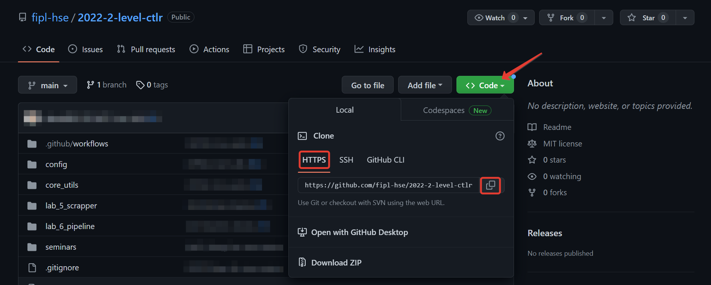

During the course changes will be added to the main repository (changes
in tests, bug fixes, etc.) - these changes will not automatically appear
in your forks.
To add changes to your fork from the main repository, follow these steps:
Open the repository site sent to you by your lecturer.
Click Code, select HTTPS and click the copy button.

Open terminal in PyCharm development environment.
Run gitremoteaddupstream<link-to-main-repository>.
Run gitfetchupstream.
Important
Please note that the link in the screenshot
above points to the parent repository.
Run gitmergeupstream/main--no-edit.
Note
Depending on the number of changes, the output of the
command will be different.
This command will result in the latest changes from
the main repository appearing in your local fork.
Fork can be in several states in relation to the upstream repository:
Fork and upstream are aligned by states.
There are new changes in upstream that are not yet in the fork:
For example, when adding fixes to existing files.
There were new changes in upstream that were not yet in the fork +
there were changes in the fork that conflict with changes from upstream:
For example, when one of the laboratory works was added
to the upstream as an exemplary.
For cases 2 and 3, automatic update mechanisms are provided via a comment in the Pull Request.
For case 2:
The update occurs using a comment containing the substring /update:get_new
The fork will contain changes from the upstream repository.
Case 3 is divided into two scenarios based on the need to save
the student’s laboratory work in the fork:
If it is necessary to keep the version of the laboratory work from the fork,
then the update occurs using a comment containing the substring /update:keep_fork:
The fork will contain changes from upstream that do not affect the main.py
and start.py files for laboratory work:
The main.py and start.py files will be saved as they are in the fork.
All other conflicts will be resolved in favor of upstream changes.
If it is necessary to upload a version of laboratory work from upstream to the fork,
then the update occurs using a comment containing the substring /update:keep_upstream
The fork will be aligned with the upstream.
All conflicts will be resolved in favor of upstream changes.